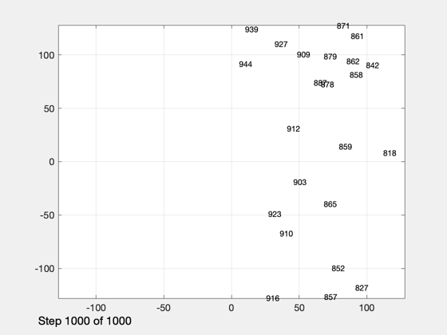
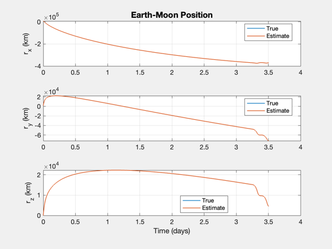
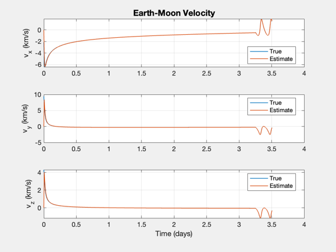
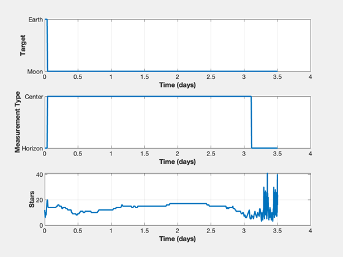

Optical navigation demo in the Earth-Moon system.
Simulates optical navigation between the Earth and the moon. Loads the file EarthMoonTraj.mat. You can turn off the viewers to greatly speed up the simulation. NavigationCamera is used for both the star camera and navigation camera.
------------------------------------------------------------------------ See also: NavigationCamera, StarCameraViewer, OpticalNavigationMoon, U2Q, Plot2D, NewFig, XLabelS, YLabelS ------------------------------------------------------------------------
Contents
%-------------------------------------------------------------------------- % Copyright (c) 2020 Princeton Satellite Systems, Inc. % All rights reserved. %-------------------------------------------------------------------------- % Since 2020.1 %--------------------------------------------------------------------------
Viewers slow the simulation down
viewersOn = true;
Read in data stored in EarthMoonTraj.mat
s = load('EarthMoonTraj');
n = length(s.t);
Setup the cameras
d = NavigationCamera;
% Threshold for switching to the Earth view for navigation
rNE = 10000;
Set up the viewers
if( viewersOn ) hNav = StarCameraViewer('initialize','Navigation Camera',n); %#ok<*UNRCH> end
Setup Optical Navigation
dONS = OpticalNavigationMoon; dONS.dT = s.t(2); OpticalNavigationMoon( 'initialize', dONS, s.r(:,1), s.v(:,1) ); d.q = [1;0;0;0]; yN = NavigationCamera( s.r(:,1), d ); dONS = OpticalNavigationMoon( 'update', dONS, yN, s.rM(:,1), s.vM(:,1), s.r(:,1), s.v(:,1) );
Size the arrays
rE = s.r; vE = s.v; target = zeros(1,n); type = zeros(1,n); nStars = zeros(1,n);
Simulate
for k = 1:n if( k > 1 ) dONS.dT = s.t(k) - s.t(k-1); else dONS.dT = s.t(2); end dONS = OpticalNavigationMoon( 'get unit vector', dONS, s.rM(:,k), s.vM(:,k), s.r(:,k), s.v(:,k) ); d.xPlanet = [s.rM(:,k) [0;0;0]]; d.q = U2Q(dONS.uC,[0;0;1]); yN = NavigationCamera( s.r(:,k), d ); % ONS [dONS,rE(:,k),vE(:,k)] = OpticalNavigationMoon( 'update', dONS, yN, s.rM(:,k), s.vM(:,k), s.r(:,k), s.v(:,k) ); target(k) = dONS.target; type(k) = dONS.type; nStars(k) = dONS.nStars; % Display the cameras if( viewersOn ) StarCameraViewer('update',yN,[],hNav, d,k); end end j = 1:k;
Plot the results
[t,tL] = TimeLabl(s.t(j));
[tM,tML] = TimeLabl(s.tMO);
yL = {'r_x (km)' 'r_y (km)' 'r_z (km)' };
vL = {'v_x (km/s)' 'v_y (km/s)' 'v_z (km/s)' };
legX = {'True' 'Estimate'};
leg = { legX legX legX };
Plot2D(t,[s.r(:,j);rE(:,j)],tL,yL,'Earth-Moon Position','lin',{'[1 4]','[2 5]','[3 6]'},[],[],[],[],leg)
Plot2D(t,[s.v(:,j);vE(:,j)],tL,vL,'Earth-Moon Velocity','lin',{'[1 4]','[2 5]','[3 6]'},[],[],[],[],leg)
NewFig('Targeting')
subplot(3,1,1);
h = plot(t,target(j));
set(h,'linewidth',2);
grid on
XLabelS(tL);
YLabelS('Target')
set(gca,'ytick',[1 2],'yticklabel',{'Moon' 'Earth'});
subplot(3,1,2);
h = plot(t,type(j));
set(h,'linewidth',2);
grid on
XLabelS(tL);
YLabelS('Measurement Type')
set(gca,'ytick',[1 2],'yticklabel',{'Horizon' 'Center'});
subplot(3,1,3);
h = plot(t,nStars(j));
set(h,'linewidth',2);
grid on
XLabelS(tL);
YLabelS('Stars')
%--------------------------------------
% $Date$
% $Id: ff0e434fd5a92dc87068159fa1b3fba4e5033c21 $
  